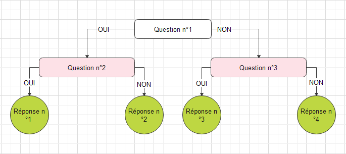

Bienvenue sur ce jeu interactif
Le jeu consiste à faire des choix. Vous devez répondre à des questions fermées qui vous amènerons à d'autres choix et ainsi de suite jusqu'à arriver au bout et avoir des conseils
Nous connaissons tous ces diagrammes ou il y a une question fermée, c'est-à-dire que l'on ne peut répondre que par oui et par non, qui nous mène à une nouvelle question et à la fin à une réponse.
Exemple de diagramme de flux en image :

Lien pour aller vers le diagramme :
- Le vélo pour le trajet domicile-travail
- Le covoiturage pour le trajet domicile-travail
- En savoir plus sur le vélo
- En savoir plus sur le covoiturage
Cette page vous est offerte par l'association Steredenn - Mobil'Rance :
Numéro de téléphone : 02.96.39.50.66
Mail : mobilite@steredenn.org
Lien vers
le site de l'association
Vous pouvez aussi nous suivre sur notre page Facebook :
@mobilrancedinan